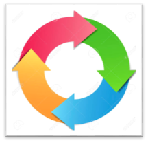
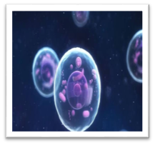

|
Propósito de Aprendizaje |
||
|
Competencia |
Capacidad |
Desempeño |
|
Explica el mundo físico, basado en conocimientos científicos. |
Comprende y aplica conocimientos científicos y argumenta científicamente. |
Justifica con argumentos que la célula es la unidad básica y fundamental de todo ser vivo. Identificar las etapas y división del ciclo celular para reconocer en el laboratorio a través del microscopio con responsabilidad |
MOTIVACIÓN
Observamos un vIdeo introductorio acerca de la importancia de las funciones de la célula.
CONFLICTO COGNITIVO

- ¿Mencione que es un ciclo?
- ¿Qué es una célula?
Mediante la técnica de lluvia de ideas, los estudiantes responden la pregunta.